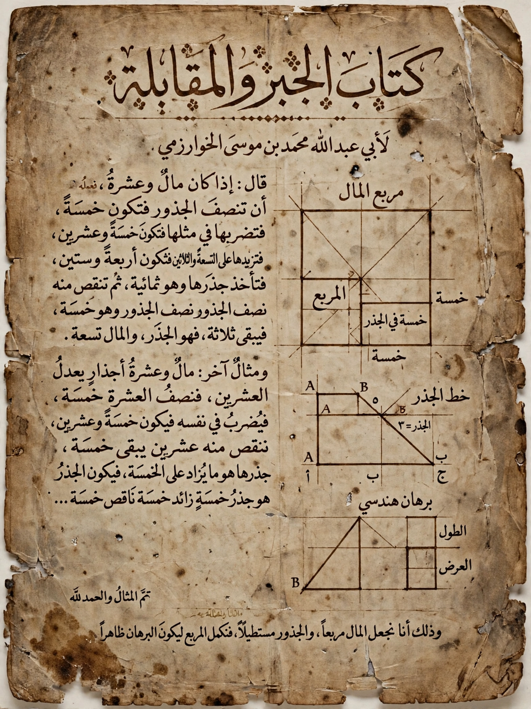

Algebra

[Image: a page from al-Khwarizmi's algebra treatise in Arabic manuscript, with geometric diagrams]Algebra is the branch of mathematics that studies algebraic structures and the operations that can be performed on them, together with the rules for manipulating symbols, formulas and equations. Elementary algebra — taught in schools worldwide — generalises arithmetic by using variables, usually letters, to represent unknown or arbitrary numbers, and solving equations such as quadratic equations for those unknowns.
The word comes from the Arabic al-jabr ("reunion of broken parts"), from the title of a book by the Persian scholar al-Khwarizmi (c. 820 AD), whose name also gave us the word "algorithm". Babylonian, Greek (Diophantus), Indian and Chinese mathematicians had solved equations for millennia before, but algebra emerged as a distinct discipline in the Islamic Golden Age and was carried into Europe via translations, notably also giving its notation its modern form through Viète and Descartes.
Levels and branches
- Elementary algebra — variables, expressions, linear and quadratic equations, polynomials and factorisation.
- Abstract (modern) algebra — groups, rings, fields, vector spaces and other structures, systematised in the 19th–20th centuries by Galois, Noether and others; Galois theory explained why no general formula with radicals exists for quintic equations.
- Linear algebra — vectors, matrices and linear maps; the computational backbone of graphics, data science and quantum mechanics.
- Universal algebra, algebraic geometry, algebraic number theory and algebraic topology — bridges to geometry and number theory.
Applications
Algebra is used everywhere equations are: in physics and engineering formulas, in computer programming structures, in economics, cryptography and error-correcting codes. Techniques and courses are catalogued by bodies such as the American Mathematical Society.